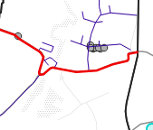
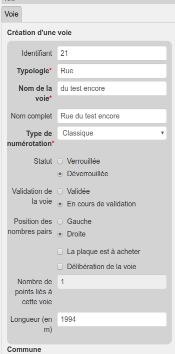
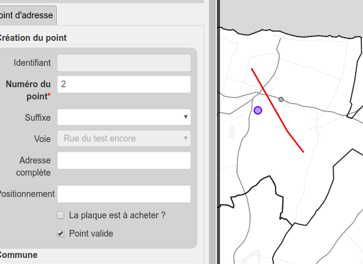
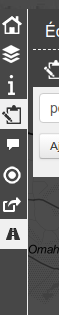
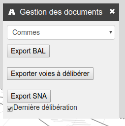

Description des fonctionnalités qu'apporte le module
Si vous n'avez pas encore de Projet QGIS pour le module adresse, je vous conseille de vous rendre sur la documentation du Plugin Adresse en premier si vous souhaitez en faire l'utilisation.
Spécificité lors de l'édition
Pour pouvoir éditer une adresse il y a plusieurs choses à prendre en compte. Tout commence avec la couche
voie ou comme le montre l'image ci-dessous il y a deux styles différents. Bleu pour une voie
vérouillée et Rouge pour une voie déverrouillée.

Lorsqu'on souhaite créer une adresse et en l'occurrence éditer la couche point_adresse il faut que la voie
qui concerne cette adresse soit en mode déverrouillée.
Pour ce faire on entre en mode édition avec la voie concernée par l'adresse et comme on l'aperçoit sur
l'image ci-dessous, il y a un paramètre Statut en bouton radio où l'on peut lui attribuer la valeur
Verrouillée ou bien la valeur Déverrouillée.

Maintenant que la voie sur laquelle je compte travailler est déverrouillée je peux ajouter l'adresse. Il
suffit d'entrer en edition avec la couche point_adresse puis de placer le point la où se situe l'adresse.
Après ça une proposition concernant le numéro d'adresse est généreée automatiquement. Cette génération
automatique prend en compte le sens de la voie, le côté de la voie ou l'on se situe, le type de numérotation
(classique ou métrique), si l'on a inversé le sens de numérotation ou non et les points déjà présents. La
voie que vous avez déverrouillée sera aussi automatiquement prix en compte pour votre adresse.
Exemple: sur l'image ci-dessous, la voie à laquelle j'ajoute une adresse, son sens va de haut en bas. Sa numérotation est classique et je me situe donc à droite. Son sens de numérotation n'est pas inversé donc il est censé générer un numéro pair. Il n'y a pas d'adresse présente à droite donc il me donne le numéro 2 (premier nombre pair). Bien sûr vous pouvez modifier le numéro si vous en avez besoin.

Export de document
Comme on le voit ci-dessous, le module ajoute un mini-dock. Il est représenté dans le menu par une icône de route (dernier élément du menu). Sur ce dock on y trouve un menu de téléchargement des documents pour la gestion des voie et adresse. Il y a: * l'export BAL qui est un export CSV des adresses au format BAL; * l'export des voies à délibérer; * l'export SNA.
 
Voici un exemple d'export BAL.